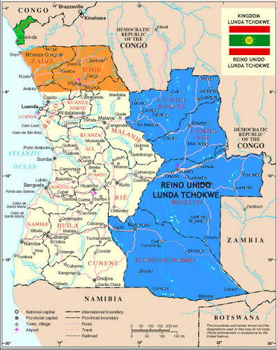
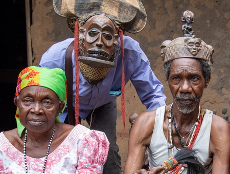
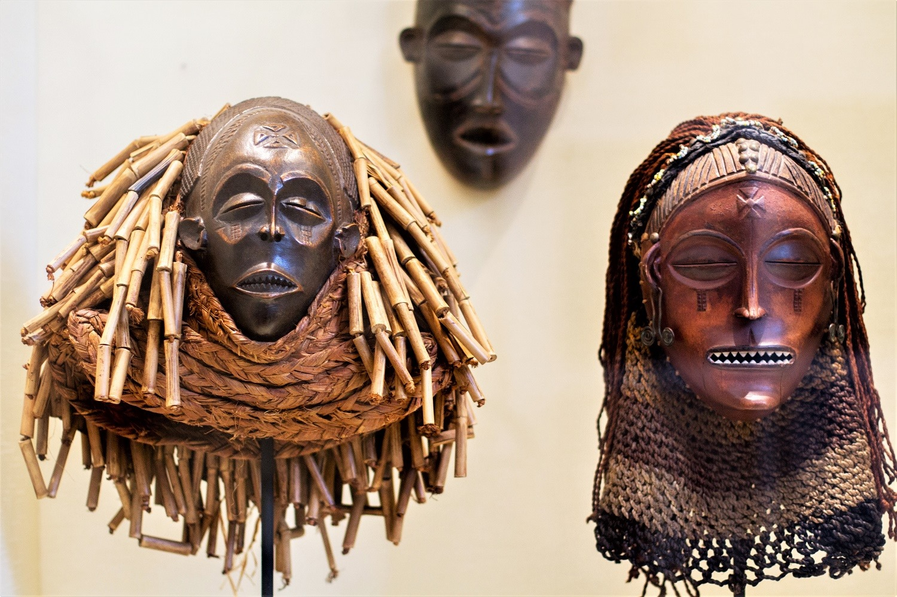
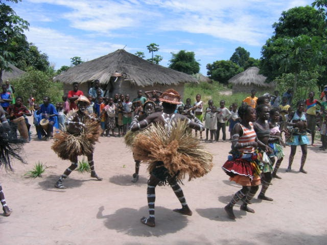
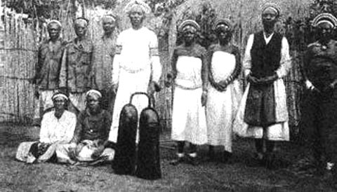
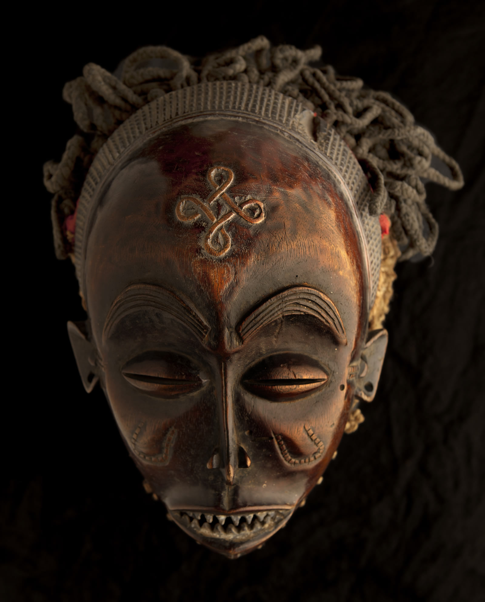
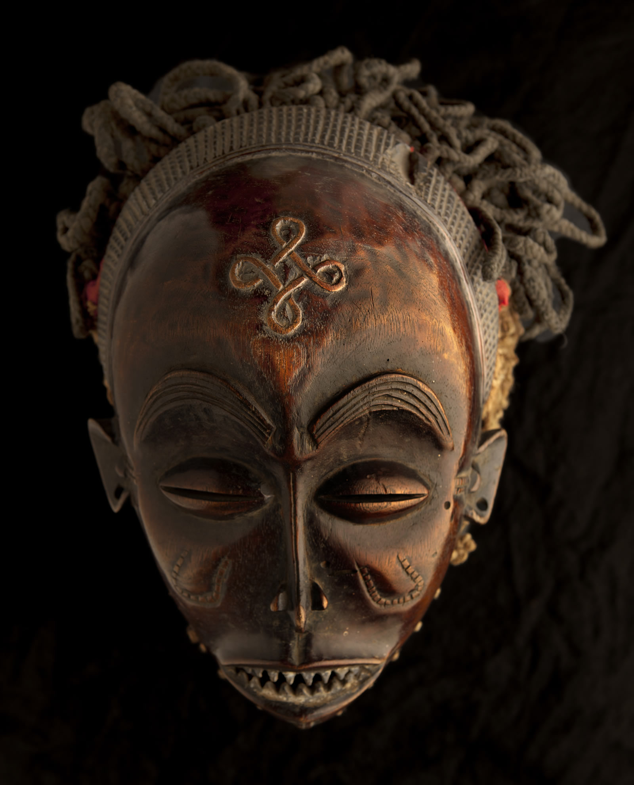

- Origem
O povo Chokwe (ou Cokwe) é um dos grupos étnicos mais antigos e importantes da África Central, pertencente à grande família Bantu. Atualmente, os Chokwe encontram-se principalmente no leste e centro de Angola, nas províncias da Lunda Norte, Lunda Sul, Moxico e Cuando Cubango, mas também estão presentes na República Democrática do Congo e na Zâmbia. A origem dos Chokwe está ligada ao poderoso Reino Lunda, um império que se desenvolveu entre os séculos XVII e XIX, na região centro-sul de Angola. Os Chokwe eram inicialmente aliados e súbditos dos Lunda, mas com o passar do tempo, tornaram-se independentes e fundaram o seu próprio Estado, o Reino Chokwe.
Este novo reino destacou-se pela sua organização política, comércio e poder militar. Os Chokwe eram conhecidos por serem excelentes caçadores, guerreiros e comerciantes. Eles trocavam produtos como marfim, cera, mel e borracha por tecidos, sal e ferramentas trazidas por outros povos e, mais tarde, pelos europeus. Mesmo após o declínio do Reino Chokwe, o povo manteve vivas as suas tradições e a sua língua — o Cokwe, uma das línguas nacionais de Angola. Essa resistência cultural demonstra o orgulho e a força da sua identidade ao longo dos séculos.
O povo Chokwe (também conhecido como Tchokwe ou Quioco) é um dos grupos étnicos mais importantes da região centro-sul de África, especialmente em países como Angola, República Democrática do Congo (RDC) e Zâmbia. Conhecidos pela sua rica cultura, arte e tradições espirituais, os Chokwe representam uma das civilizações africanas mais antigas e bem estruturadas. Este trabalho aborda a origem, cultura, tradições e arte desse povo que continua a desempenhar um papel essencial na história e identidade cultural de Angola e de toda a África Austral.
- culturas
A cultura dos Chokwe é uma das mais ricas e simbólicas de Angola e da África Central. A sociedade Chokwe é tradicionalmente patrilinear, o que significa que a herança e a liderança passam de pai para filho. As comunidades são organizadas em clãs familiares, cada um liderado por um soba (chefe tradicional), que é responsável por manter a ordem, resolver conflitos e proteger as tradições. Os ritos de iniciação ocupam um papel fundamental na vida dos jovens Chokwe. Esses rituais marcam a transição da infância para a vida adulta e são acompanhados por ensinamentos sobre moral, respeito, comportamento e responsabilidades dentro da comunidade. Durante os rituais, são realizadas danças, cantos e cerimônias sagradas, que reforçam os laços entre os membros do grupo.
A cultura Chokwe é uma das mais ricas e complexas de toda a África. Ela reflete a sua ligação com a natureza, os antepassados e a comunidade. A vida social dos Chokwe é fortemente baseada na família e na linhagem, e as tradições orais são o principal meio de transmitir conhecimentos e valores.
Organização Social
A sociedade Chokwe é patrilinear, ou seja, a descendência e a herança passam pelo lado do pai. O chefe da aldeia é conhecido como "Soba", responsável por manter a ordem e resolver conflitos. Acima dos sobas existia o "Mwana Ngana", o rei, que exercia o poder máximo dentro do território.
Religião e Crenças
Os Chokwe acreditam fortemente nos espíritos dos antepassados, que protegem as famílias e influenciam os acontecimentos do mundo dos vivos. O Deus supremo, chamado Kalunga, é visto como o criador de tudo, mas o contato com ele é feito através dos espíritos menores e ancestrais. Os rituais religiosos, danças e máscaras fazem parte das cerimônias espirituais, simbolizando a ligação entre o mundo espiritual e o físico.
Língua
A língua falada pelos Chokwe é o Cokwe (ou Tchokwe), pertencente ao grupo bantu. Essa língua é também uma das línguas nacionais de Angola, reconhecida oficialmente pelo Estado.
Alimentação e Vestuário
A base da alimentação Chokwe é o milho, a mandioca, o feijão, o amendoim e o peixe. A mandioca é transformada em funje, prato tradicional angolano. O vestuário tradicional era feito com peles de animais e tecidos de fibras vegetais. As mulheres adornavam-se com colares, pulseiras e missangas, enquanto os homens usavam símbolos de status, como bastões e chapéus especiais.
Casamento
O casamento é visto como uma união entre famílias, e não apenas entre duas pessoas. Antes do casamento, há negociações entre as famílias, incluindo o pagamento do dote. As cerimônias envolvem cânticos, danças e partilha de alimentos.
Funerais
Os funerais são momentos de respeito e ligação espiritual. Os Chokwe acreditam que a morte não é o fim, mas uma passagem para o mundo dos ancestrais. Cânticos, oferendas e danças são realizados para guiar o espírito do falecido.
- Arte
A arte Chokwe é mundialmente reconhecida por sua beleza, simbolismo e espiritualidade. É uma das formas mais expressivas de toda a arte africana.
Escultura e Máscaras
Os Chokwe são grandes escultores e criadores de máscaras cerimoniais feitas de madeira, fibras e pigmentos naturais. As máscaras mais famosas são:
- Máscara Chihongo – representa o poder e a riqueza, usada por homens em cerimônias de prestígio.
- Máscara Pwo – simboliza a mulher ideal e a fertilidade, usada para homenagear as mães e a beleza feminina.
- Máscara Cikunza – associada à iniciação dos jovens e aos rituais de passagem.
-Fetiches-Chokwe-Arte-africana-1336541290.jpg) 

As mulheres Chokwe produzem cestos, tapetes e utensílios feitos com fibras vegetais, decorados com desenhos geométricos. Essas peças são usadas no dia a dia, mas também possuem valor simbólico e artístico.
O povo Chokwe é um verdadeiro tesouro da cultura africana. Sua origem histórica, suas tradições espirituais e sua arte riquíssima fazem parte do patrimônio cultural de Angola e da humanidade. Mesmo com a modernização, os Chokwe continuam a preservar a sua identidade, demonstrando orgulho, sabedoria e respeito pelos antepassados. Estudar o povo Chokwe é compreender uma parte fundamental da história africana e valorizar a diversidade cultural que torna Angola um país tão especial.